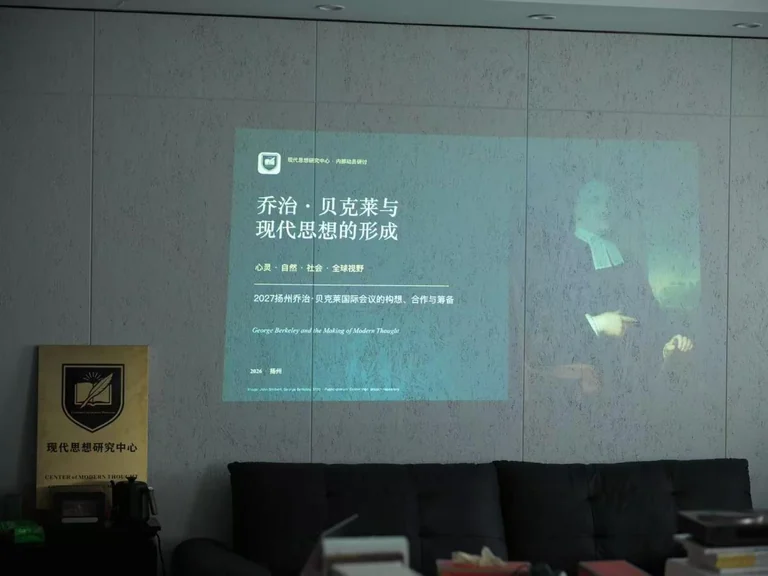

Overview
On 5 August 2026, the Center of Modern Thought, School of Social Development, Yangzhou University, continued its series of working seminars in Rizhao, Shandong. This meeting considered George Berkeley and the world: global perspectives on mind and nature. It also addressed scholarly publishing, the development of early-career researchers and preparations for an international Berkeley conference in 2027.
Main presentation
Teng Guangwei, a doctoral researcher in philosophy at the University of York, argued that Berkeley should not be reduced to the formula “to be is to be perceived”. He placed Berkeley within eighteenth-century intellectual exchange, examining his response to the difficulties surrounding material substance in mechanistic accounts of nature and his reconfiguration of mind, perception and the natural world.
Discussion and research questions
Liu Ming approached Berkeley’s place in intellectual history through experimental philosophy and Locke’s account of qualities, with particular attention to his influence on French philosophy. Li Daiwei explored the metaphysical demands of explaining a nature without matter. Zuo Tianmeng drew on French-language scholarship to discuss early translations, reception and criticism of Berkeley in continental Europe.
Publishing and international exchange
The meeting proposed a focus on Descartes for the third issue of Modern Philosophy, bringing recent work from Italy, France and elsewhere into dialogue with the center’s research. Possible visits by Pierre Guenancia and Giulia Belgioioso were discussed; participants, dates and arrangements remain subject to formal confirmation.
Liu Ming emphasised a sustained focus on early modern philosophy and specialist scholarship, building a stable research community through the combination of translation, research and publication.
Developing early-career researchers
Participants recommended beginning with clearly defined questions in areas where translations and research resources remain limited. Establishing editions, bibliographies, terminology and basic sources should precede broader thematic studies. For major bodies of work such as those of Nicolas Malebranche and Blaise Pascal, specific concepts, texts or controversies offer a more manageable starting point than general surveys.
The meeting also stressed foreign-language study, the history of philosophy and academic writing, alongside practical experience in editing, translation and scholarly exchange.
Preparing the 2027 Berkeley conference
Teng Guangwei proposed a major multi-day international conference centred on Berkeley in China and East Asia. Liu Ming stressed the importance of lasting international relationships, opportunities for students and researchers to take part in academic exchange and conference organisation, and the international visibility of Chinese-language scholarship. The center established a working group for the 2027 Berkeley international conference.
